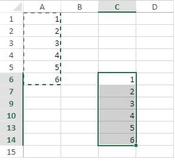
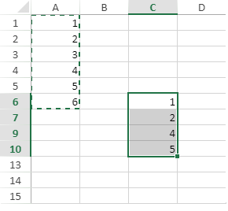
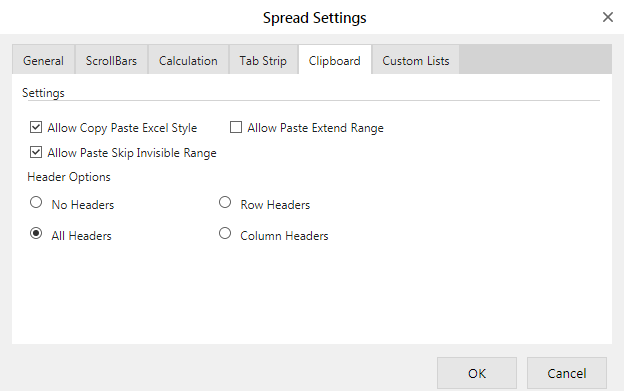

In a spreadsheet, you can choose whether to paste the data in an invisible range or not by using the pasteSkipInvisibleRange property. By default, the data gets pasted into the invisible cells, rows, and columns, as well.
However, you can skip pasting in an invisible range by setting the pasteSkipInvisibleRange property to True. This will ensure that the data is pasted to the next visible cell in the range instead of invisible cells, rows, or columns.
| When pasteSkipInvisibleRange = True | When pasteSkipInvisibleRange = False (default value) |
|---|---|
|  |  |
In SpreadJS, the following conditions are considered as invisible cells, rows, or columns:
The following table lists the features where pasteSkipInvisibleRange property is supported along with their corresponding behaviors.
| Copied Object | Before Copy | pasteSkipInvisibleRange = True | pasteSkipInvisibleRange = False |
|---|---|---|---|
| Value | Belongs to the cell |
If the target cell is invisible, will paste to the next legal visible row or column. If the range remains invisible, the effect is same as the copied range. If the copied range is illegal, it won' t paste. If the pasted range' s next visible row/column count is less than the copied range' s row/column count, it won' t paste the whole range. |
It will be invisible when the cell remains invisible and will show the value once the cell gets visible. If the range changes to visible, the effect is the same as the copied range. |
| Formula && SparklineEx | Connects with the cell |
If the target cell is invisible, it will paste to the next legal visible row or column. Since the formula reference will consider the invisible range, so the result of the formula can differ from the previous result. This property does not support the pasting of DynamicArray and ArrayFormula in the sheet. For example, if you try to copy a DynamicArray, it will paste nothing in the sheet. |
Same as the pasted value. |
| Style (CellStyle, CellButton, formatter, and CellType ) | Belongs to the cell |
If the target cell is invisible, will paste to the next legal visible row or column. If the range remains invisible, the effect will be the same as that of the copied range. |
Same as the pasted value. |
| DragMove |
Selects a range | The move rectangle will consider the invisible range and the range rectangle will expand. | It will consider the invisible range. |
| Shift Copied Cells | Copies or cuts a range | When shifting the range down/right, the moved range will consider the invisible range and the move to range will skip the invisible range. |
It will consider the invisible range. |
| CustomName |
Cell or range reference |
If the reference type is cell, new customName reference will change to a new cell and skip the invisible range. If the reference type is range, the new customName reference will consider the invisible range. |
After moving, the customName reference will change to a new range. |
| Comment | Belongs to the cell |
Same as the pasted value. |
Same as the pasted value. |
| Tag | Belongs to the cell |
Same as the pasted value. |
Same as the pasted value. |
| Hyperlink | Belongs to the cell |
Same as the pasted value. |
Same as the pasted value. |
| BindingPath | Belongs to the cell |
Same as the pasted value. |
Same as the pasted value. |
| Header | Belongs to the cell | If the target row/column is invisible, it will paste to the next legal visible row or column in the header area, if the copied row/column count is more than the visible pasted row/column count, it will then paste only a part of the value. | It will only copy/paste the changed value. |
| CellStates | Belongs to the cell | It will only copy the cell value and not the cell states. | It will only copy the cell value and not the cell states. |
| Sparkline | Belongs to the cell | The reference of the data range is same as that of the formula. The sparkline area is the same as the pasting value. |
Same as the pasted value. If the sparkline data range is invisible, it will ignore the invisible range while calculating. |
| DataValidation |
While creating a DataValidation for a range, it will be saved as a range. |
If the target cell is invisible, will paste to the next legal visible row or column. |
When pasting a copied dataValidation range, it will be saved as multiple cell. It will be invisible when the cell is invisible and will display the value once the cell gets visible. |
| ConditionalFormat | While creating a ConditionalFormat for a range, it will be saved as a range. |
If the target cell is invisible, it will paste to the next legal visible row or column. a. copy and paste a range in the sheet, it will split into two or more ranges because it skipped the invisible range. b. copy multiple range with the same row or same column, it will split into more little ranges just like [a]. c. copy a range and paste it to multiple ranges, the range will split into two or more ranges just like [a]. It does not support copying and pasting of multiple ranges in the sheet. |
It will be invisible while the cell is invisible and will show the value when the cell gets visible. a. copy and paste a range in the sheet, it will be the same as the copied range when it gets visible. b. copy multiple range with the same row or same column, it will be pasted as one range but will be saved as two ranges, each range is calculated independently. c. copy a range and paste it to multiple ranges, each range will calculate independently and will show the same result. It does not support copying and pasting of multiple ranges in the sheet. |
| Span | A whole range |
It does not support pasting of span with skipping invisible range. The span result is the same as that of the pasting to invisible range. But the cells in span will paste by skipping invisible range. If the range changes to visible, the span is the same as that of the copied span. |
It is still a whole range. If the range changes to visible, the span is same as the copied span. |
| Table | A whole table |
If you copy only a part of table, it will only paste the values and styles to the next legal visible row or column. If you copy a range that contains the whole table and pastes it to the invisible range, the table won' t expand but the value of the table will paste with skipping the invisible range. When you paste to right or below of the table, and the table supports auto expand, the expand range will include the invisible range and the invisible range contains no value. |
If you copy only a part of table, it will only paste the values and styles. But, if you copy a range that contains the whole table, it will then paste the whole table. If the range changes to visible, the effect remains the same as that of the copied range. |
This example allows you to skip pasting the data in an invisible range.
| JavaScript |
Copy Code
|
|---|---|
workbook.options.pasteSkipInvisibleRange = true;
|
|
In SpreadJS Designer, click 'Settings' tab and select 'General' option from 'Spread Settings' group to display the 'Spread Settings' dialog as shown below. Select the Clipboard tab to check or uncheck the Allow Paste Skip Invisible Range option to enable or disable the pasting of data into the invisible range in the spreadsheet.
